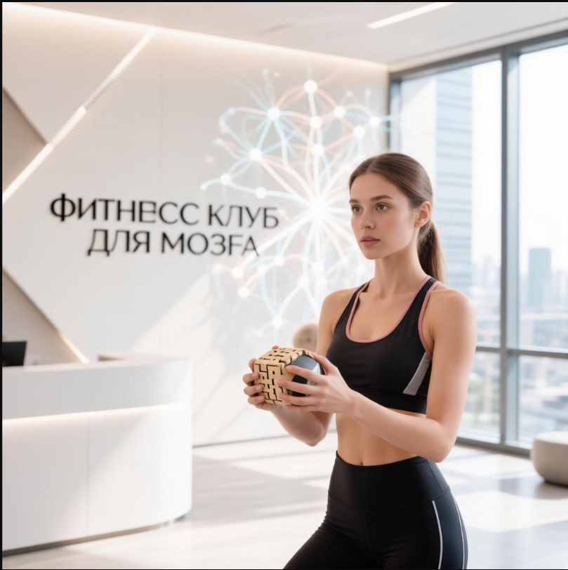

Смузи для памяти
Черника, грецкий орех, шпинат, кокосовое молоко.
Первый в России фитнес-клуб для интеллекта. Научно обоснованные тренировки памяти, внимания, скорости мышления и креативности — полностью бесплатно.

Мы не качаем бицепсы. Мы прокачиваем нейронные сети. И всё это — бесплатно.
Все программы основаны на доказательных методиках тренировки когнитивных функций.
Нажмите на программу — читайте или слушайте упражнение и делайте прямо сейчас. Без записи.
Все упражнения доступны без оплаты и регистрации.
Нажмите на карточку — откроется описание. Можно читать или прослушать.
Интервальная тренировка внимания и скорости мышления
Рабочая память и генерация идей на время
Креативность и выход за рамки привычного
Осознанность и восстановление внимания
Глубокая концентрация без отвлечений
Тренировка рабочей памяти и концентрации
Развитие гибкости мышления и памяти
Запоминание деталей и их воспроизведение
Беглость речи и скорость поиска слов
Поиск закономерностей
Снижение стресса и улучшение фокуса
Осознанность и снижение тревоги
Креативность и связность мышления
Скорость мышления и гибкость
Тренировка устойчивости внимания
Все упражнения можно делать самостоятельно в любое время. Ниже — пример расписания групповых занятий (онлайн/офлайн).
Групповые занятия проводятся по запросу. Свяжитесь с нами по телефону, чтобы узнать ближайшие слоты.
Идеи для перекусов, которые поддерживают внимание и память.
Черника, грецкий орех, шпинат, кокосовое молоко.
Кофе + L-теанин. Фокус без нервозности.
Зелёный чай, розмарин, мята.
Простыми словами о том, почему память можно тренировать.
Как меньше отвлекаться на уведомления.
Следите за результатами тренировок. Функция в разработке.
Скоро здесь появятся графики памяти, внимания и истории тренировок.
Функция личного кабинета скоро появится.